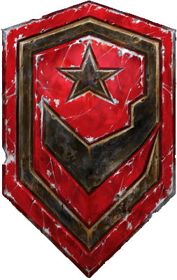

Ahogy minden játéknál megszokhattuk, itt is rendelkezésünkre fognak állni új egységek.
El lehet felejteni a sima "építs bázist meg sereget, aztán irtsd ki az ellenfelet" küldetéseket, nem olyan egyszerű az.
Vigyázat még forró! :)
A Terran viszonylag fiatal faj a Koprulu szektorban, akik azoknak a fegyenceknek és egyéb disszidenseknek leszármazottai, akiket a kormány alkalmatlannak ítélve évszázadokkal ezelőtt űrhajóra pakolva kilövetett a Földről egyenesen a mély űrbe. Több évtizeddel később végül a hajók tönkrementek, így a legközelebbi lakható világok felé vették az irányt, és bár néhány hordozó megsemmisült, a túlélők sikeresen alkalmazkodtak környezetükhöz. Hamarosan több érdekcsoport és politikai blokk jött létre a terran űrben; A Terran Konföderáció (Terran Confederacy), a Kel-Moriai Szövetség (Kel-Morian Combine) és az Umojai Protektorátus (Umojan Protectorate). A Konföderáció megpróbálta bekebelezni az összes terran világot, ám a terroristaként számon tartott Arcturus Mengsk a Zerg invázió közepette végül szétzúzta a hatalmat. Jelenleg a Konföderáció maradványaiból felemelkedett Terran Domínium (Terran Dominion) fogja össze a szektor legtöbb politikai tömörülését és egyéb szervezetét, amelynek élén nem más áll, mint I. Arcturus császár. A terranok nagy túlélők, akik számos élettelen világban leltek otthonra. Nincsenek fejlett technológiáik, mint a Protossnak, és nem rendelkeznek olyan fizikai képességekkel sem, mint a Zerg, de az erős páncélzat, a nagy tűzerő és a különféle egységek variációnak köszönhetően haderejük számottevő fenyegetést jelenthet, bunkerjeik és siege tankjaik pedig defenzív szituációk alatt kiemelkedő érdemeket mutathatnak fel.